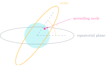

Definition
- Inclination
 : angle between the orbital plane and the equator (
: angle between the orbital plane and the equator ( equatorial, polar).
equatorial, polar). - Ascending / descending node: where the satellite crosses the equator going north / south.
- Apogee / perigee: farthest / nearest points; the satellite is fastest at perigee, slowest at apogee (Kepler's second law).
- Period: for semi-major axis and ms
 ,
,
Derivation
For a circular orbit of radius , gravity provides the centripetal force: , so and . At 700 km altitude, km: s min, about 14.5 orbits per day.
Picture

.Intuition
Altitude is the master parameter: it sets the period, the speed over the ground, the footprint and the resolution.
Pitfall
Orbits are not fixed: the Earth's oblateness () makes the orbital plane precess, and drag lowers LEO orbits. Sun-synchronous orbits exploit the first; station-keeping manoeuvres fight the second.